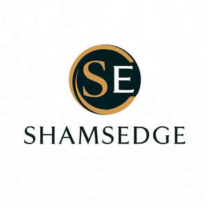

Trade Mark Journal No.2025/040 3 October 2025
UK00004239981 27 July 2025 (18,25,35)

- Class 18
- Bags; Tote bags; Luggage bags; Duffle bags; Duffel bags; Carry-on bags; Toiletry bags; Bags for clothes; Drawstring bags; Carry-all bags; Belt bags and hip bags; Nose bags [feed bags]; Bags (Nose -) [feed bags]; Carrying bags; Grocery tote bags; Cross-body bags; Bags for umbrellas; Diaper bags; Luggage, bags, wallets and other carriers; Crossbody bags; Cloth bags; Bucket bags; Leather bags; Sling bags; Nappy bags; Canvas bags; Duffel bags for travel; Shoe bags; Belt bags; Clutch bags; Wheeled bags; Kit bags; Travel bags; Bags for travel; Messenger bags; Souvenir bags; Garment bags; Leather bags and wallets; Toilet bags; Shoulder bags; Make-up bags; Cosmetic bags; Waterproof bags; Reusable shopping bags; Umbrella bags; Camping bags; Towelling bags; Makeup bags; Courier bags; Bags for campers; Bags for carrying pets; Bags [envelopes, pouches] of leather, for packaging; Bags [envelopes, pouches] of leather for packaging; Bags [envelopes, pouches] for packaging of leather; Gym bags; Roll bags; Hand bags; Knitted bags; Travelling bags; Attaché bags; Cabin bags; Flight bags; Traveling bags; Overnight bags; Beach bags; Bags for climbers; Mesh shopping bags; Mesh bags for shopping; Boot bags; Leather shopping bags; Canvas shopping bags; Bum bags; Hiking bags; Knitting bags; Frames for bags [structural parts of bags]; Wash bags for carrying toiletries; Suit bags; Roller bags; Nose bags; Baby carrying bags; Hunting bags; Gladstone bags; Feed bags; Waist bags.
- Class 25
- Clothes; Clothing; Swaddling clothes; Baby clothes; Beach clothes; Nappy pants [clothing]; Denims [clothing]; Work clothes; Jackets [clothing]; Shorts [clothing]; Clothes for sports; Drawers [clothing]; Drawers as clothing; Aprons [clothing]; Jackets (Stuff -) [clothing]; Stuff jackets [clothing]; Clothes for sport; Linen clothing; Headbands [clothing]; Headbands for clothing; Kerchiefs [clothing]; Gloves [clothing]; Gloves as clothing; Bottoms [clothing]; Capes (clothing); Furs [clothing]; Babies' pants [clothing]; Jerseys [clothing]; Trunks being clothing; Maternity clothing; Layettes [clothing]; Clothing layettes; Clothing for leisure wear; Oilskins [clothing]; Hoods [clothing]; Woolen clothing; Ready-to-wear clothing; Gabardines [clothing]; Clothing for babies; Garments for protecting clothing; Bodies [clothing]; Belts [clothing]; Belts for clothing; Tops [clothing]; Gussets for underwear [parts of clothing]; Playsuits [clothing]; Collars [clothing]; Pockets for clothing; Veils [clothing]; Knitwear [clothing]; Corsets [clothing, foundation garments]; Paper hats for use as clothing items; Silk clothing; Mitts [clothing]; Hats (Paper -) [clothing]; Paper hats [clothing]; Fabric belts [clothing]; Beach clothing; Belts (Money -) [clothing]; Money belts [clothing]; Braces for clothing; Chaps (clothing); Ready-made clothing; Embroidered clothing; Casual clothing; Gussets for bathing suits [parts of clothing]; Knitted clothing.
- Class 35
- Retail services connected with the sale of clothing and clothing accessories; Retail store services in the field of clothing; Retail services in relation to clothing accessories; Mail order retail services for clothing accessories; Online retail store services in relation to clothing; Retail services in relation to clothing; Online retail store services relating to clothing; Retail services relating to clothing; Mail order retail services for clothing; Mail order retail services connected with clothing accessories; Online retail services relating to clothing; Retail services in relation to downloadable virtual clothing; Online retail services for downloadable virtual clothing; Retail of third-party pre-paid cards for the purchase of clothing; Retail services in relation to fashion accessories; Shop retail services connected with carpets; Online retail services in relation to downloadable virtual clothing; Retail services connected with the sale of furniture; Retail services in relation to footwear; Retail services in relation to car accessories; Retail services in relation to bicycle accessories; Business management of wholesale and retail outlets; Retail services in relation to toys; Retail services in relation to furniture; Retail services in relation to bags; Retail services in relation to fabrics; Retail services in relation to downloadable virtual footwear; Wholesale services in relation to clothing; Retail services in relation to jewellery; Unmanned retail store services relating to food; Retail services relating to furniture; Mail order retail services for cosmetics; Retail services in relation to furnishings; Retail services relating to jewelry; Retail services in relation to wearable computers; Retail services relating to home textiles; Online retail services relating to toys.
Shamsedge Limited